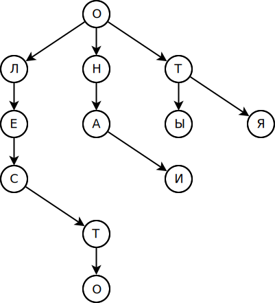

Реализация модуля морфологического анализа текста в рамках инфраструктуры Apache UIMA
Автор: Николаев Фёдор Александрович
Задача морфоанализа
Определение морфохарактеристик (часть речи, падеж и т.д.)
Пример: маме — сущ., одуш., ж. р., ед. ч., дат. п.
Зачади
- Предсказание морфохарактеристик несловарных слов.
- Оптимизация по памяти.
Решение: троичное дерево поиска
- она
- они
- лес
- лето
- ты
- я
Предсказание морфохарактеристик
Осуществляется при помощи поиска в словаре слов с наибольшим совпадающим суффиксом
джоулево (прилагательное, ср. род, ед. число, им. падеж)
- булево +
- каракулево (краткое прилагательное)
- пачулево (краткое прилагательное)
Реализация предсказания
ПрефиксноеСуффиксное дерево- Жадный поиск
Оптимизация
Троичное дерево эффективнее для хранения слов, чем хэш-таблица, в которой на каждый символ каждого слова расходуется память.
Результаты оптимизации
Потребляемая память сократилась почти в два раза.
931Mb → 530Mb
Apache UIMA
Фреймворк для работы с неструктурированной информацией
- Java
- Всё — это аннотации
-
Работа по принципу конвейера